Our Accomplishments
- jan
- feb
- mar
- apr
- may
- jun
- jul
- aug
- sept
- oct
- nov
- dec
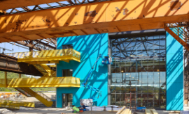
Cataylst Connection started the new year in our Hazelwoof Green Mill 19 space, co-located with Carnegie Mellon University (CMU) and Advanced Robotics in Manufacturing (ARM).
First COVID-19 case was confirmed in the United States.
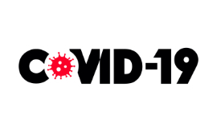
The World Health Organization (W.H.O.) proposed an official name for the disease the virus causes: COVID-19.
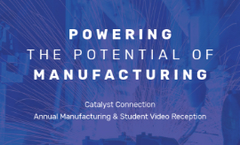
Catalyst Connection held its Annual Manufacturing Reception and Student Video Contest at NOVA Place.
Catalyst Connection moved to an all-virtual environment, as Pennsylvania Governor Tom Wolf issues statewide stay-at-home order.
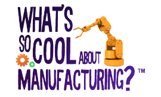
Catalyst Connection's regional Explore the New Manufacturing Student Video contests were moved to a virtual platform.
Catalyst Connection launched Peer Network Virtual Meetings
- HR Peer Network Group
- Lean Peer Network Group
- Women in Leadership Group
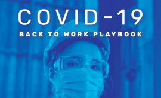
Catalyst Connection began weekly communications and releases the Back-to-Work Playbook.
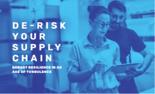
Catalyst Connection, in partnership with Blue Water Growth and Meyer, Unkovic & Scott, published the “De-Risk Your Supply Chain” E-book.
Catalyst Connection hosted “How Covid-19 Will Trigger Global Supply Chain Realignment…and What To Do About It” webinar, along with third-party partner, Blue Water Growth.
The Emerging Leaders in Manufacturing Program moved to virtual delivery.
Catalyst Connection received CARES Act funding to support manufacturers recover from COVID-19 interruptions, access resources at all levels, and come together through peer groups.
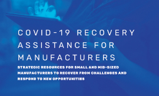
Catalyst Connection published “COVID Recovery Assistance for Manufacturers” E-book.
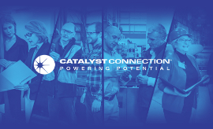
Catalyst Connection released a statement on Juneteenth.
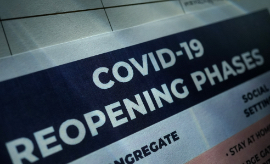
All 67 Pennsylvania counties officially moved to the “green phase” of reopening.
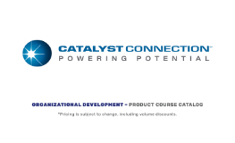
Catalyst Connection published the Organizational Development Course Catalog containing ways to create a more engaged workforce.
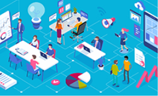
Catalyst Connection released the Leadership Development Playbook.
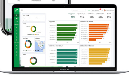
Catalyst Connection partnered with Rhabit Analytics to establish the free COVID-19 pulse survey.
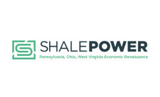
The Shale POWER Initiative provides technical assistance and business support to small and medium manufacturers and enterprises.
Catalyst Connection announced that they have received a Richard King Mellon Foundation Grant to assist manufacturers with returning to December 2019 production and economic levels.
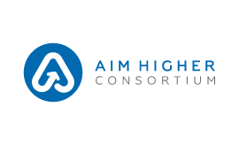
Catalyst Connection announced that they have received Department of Defense (DoD) funding to strengthen the defense supply chain in southwestern Pennsylvania and northern West Virginia.
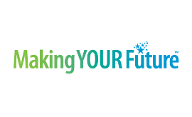
Catalyst Connection kicked off National Manufacturing Week virtually.
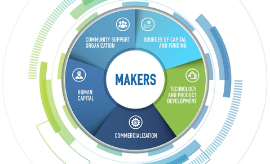
Catalyst Connection completed the Maker-to-Manufacturing (M2M) Program.
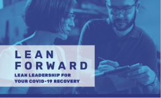
Catalyst Connection published the “Lean Forward: Lean Manufacturing in the Time of COVID-19” E-book.
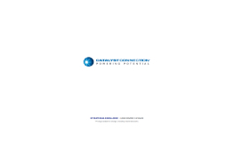
Catalyst Connection published the Lean Manufacturing Course Catalog. This course catalog was created to inform manufacturers of ways to improve the flow of products to shorten lead times, reduce operating costs, and improve employee success.
Catalyst Connection announced that they received Appalachian Regional Commission (ARC) grant to continue economic growth within coal-impacted communities.
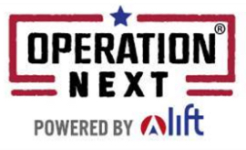
Catalyst Connection announced Advanced Manufacturing Certification Program, Operation Next, offered to Pittsburgh small businesses recovering from the pandemic.
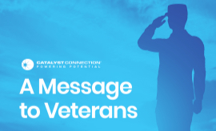
Catalyst Connection would like to thank veterans everywhere for their service and dedication. In 2019, U.S. veterans made up a total of 12.9% of the manufacturing workforce.
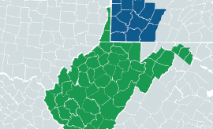
The AIM Higher Consortium announced new mini-grant program to help manufacturing companies enter or expand within the US Department of Defense supply chain.
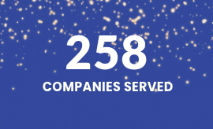
Catalyst Connection ended the year by serving 258 companies with COVID-19 response and recovery services.